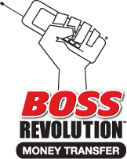

<div class="money-transfer es">    
    <div class="content">
        <h1>CADA VEZ QUE ENVÍAS DINEROC<br /><span class="highlight">ALGO BUENO SUCEDE</span></h1>
        <h3>Ahora puedes mandar dinero a Latinoamérica con <br /><span class="highlight">Boss Revolution</span><span class="highlight light">&#8480;</span> <span class="highlight">Envío de Dinero</span> para ayudar a tus seres queridos.</h3>
        <div>
            <div class="promo bordered p1">
                <div class="photo">photo</div>
                <p>Es fácil enviar dinero a tus seres queridos porque contamos con miles de puntos de pago en Latinoamérica, añadiendo pagadores todo el tiempo.</p>
            </div>
            <div class="promo bordered p2 right">
                <div class="photo">photo</div>
                <p>Escoge el servicio de entrega que más te beneficie – en efectivo, deposito en cuenta bancaria, entrega a domicilio.</p>
            </div>
            <div class="promo bordered p3">
                <div class="photo">photo</div>
                <p>Recibe una llamada gratis con cada envío para avisarle a los tuyos que le mandaste dinero.<span class="highlight light">*</span></p>
            </div>
            <div class="promo logo right">
                
                <p>Visita tu tienda participante <span class="highlight">Boss Revolution</span> más<br />cercana y envía dinero hoy</p>
            </div>
        </div>
        <div class="terms_block">
            La Transferencia de dinero y los servicios de pago son proporcionados por IDT Payment Services, Inc. (“IDT Payment”), un transmisor de dinero con licencia. IDT Payment puede ganar dinero cuando cambia sus dólares a moneda extranjera. El acceso a los productos y servicios de transferencia de dinero puede ser limitado, puede tener retrasos o no estar disponible durante los períodos de máxima demanda, la volatilidad del mercado, las actualizaciones del sistema o el mantenimiento, o problemas en el sistema de comunicación. La transferencia de fondos puede tener retrasos o no estar disponible basado a ciertas condiciones de la transacción, incluyendo la cantidad enviada, país de destino, disponibilidad de divisas, asuntos regulatorios, requisitos de identicación y horario del agente. Pueden aplicarse restricciones adicionales. Ver el producto o el Agente para más detalles.
            <span class="highlight light">*</span>Por cada transacción de transferencia internacional de dinero, persona a persona, enviada con IDT Payment a través de Boss Revolution, vamos a depositar un mínimo de $0.30 en la cuenta de Boss Revolution del remitente de forma gratuita. La cantidad del saldo gratis depende del país de destino al cual se realiza la transferencia de dinero. Este saldo promocional puede utilizarse para llamar a cualquier destino atendido por Boss Revolution. Si el remitente no tiene una cuenta de Boss Revolution, una cuenta será creada para ellos con un saldo inicial de $1. El servicio de Boss Revolution esta sujeto a los términos y condiciones. Visite <a href="http://www.bossrevolution.com">www.bossrevolution.com</a> para ver los términos completos, las tasas actuales y la información adicional. El Servicio de Boss Revolution es proporcionado por IDT Domestic Telecom, Inc. Todos los derechos reservados.
        </div>
    </div>
</div>